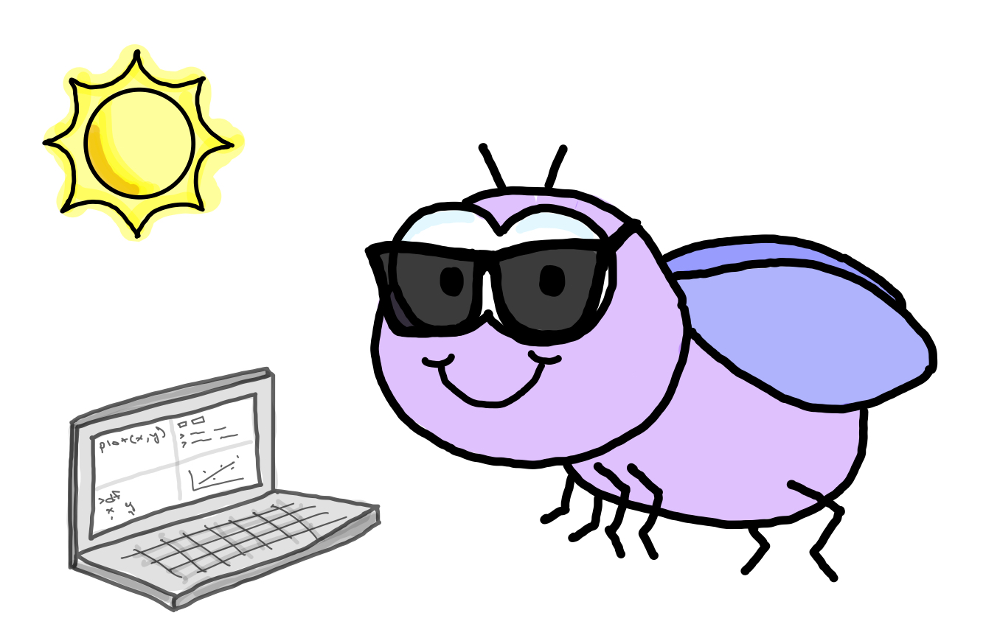
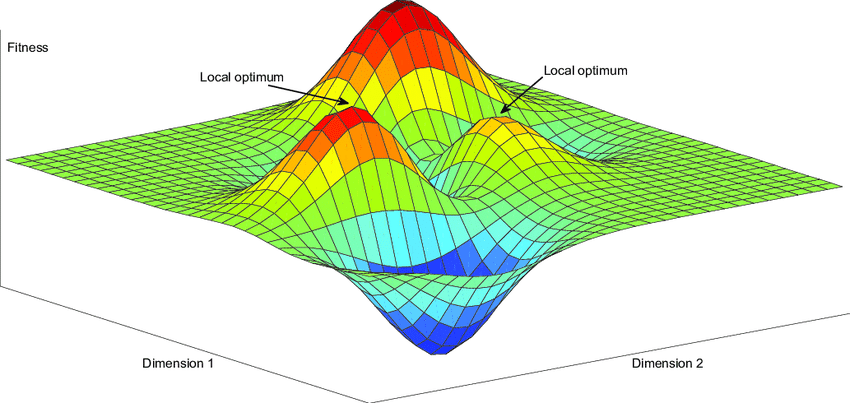

Data Science Workshop

Welcome
Thank you for checking out this workshop! This page contains a brief overview of the goals, structure, and prerequisites of the workshop.
Goals
As an open-source programming language, there is an abundance of approaches to doing data science in R. It is a wide open landscape ready for your exploration! But — to extend this metaphor to its breaking point — it isn’t just a flat landscape, where each spot is as fertile as the next. It is more complicated. Its closer to a fitness landscape where there are hidden local and global optima 1. You are encouraged to explore that space for yourself – find the high points and low points – what works best for you and what doesn’t2. But it is my hope that this workshop will serve as a useful initialization of your search of that complex adaptive landscape. And that along the way you will gain tools which will help you dig out of those valleys and climb to the top of those peaks. I have the following high-level goals for this workshop:
- Encourage best practices to ensure computational reproducibility. Reproducibility is not just necessary for good science – it will save you and your collaborators a lot of time in the long run. Making sure your code is reproducible is not as difficult as it may seem.
- Foster an appreciation of the tidyverse and its underlying principles. Tools in R, and many other programming languages, are constantly evolving and that can make learning new tools seem futile. Especially if you already have something functional with a different set of tools. But the tidyverse, is likely to stick around, and it also represents something beyond a set of tools. It worth thinking about as a philosophy of programming that can help us write more useful and readable code.
- Persuade you to go beyond a graph that merely gets the job done and toward a version that most clearly communicates the story behind your data. There are many ways to represent data in graphical form. Each time we create a figure we are making dozens – or maybe hundreds – of choices. Some choices are passive3, and some are active4, and some may have little effect5, but I hope to convince you that spending some additional time iterating figures that you will share is well worth it.
Structure
There are three parts to this workshop. But each is designed to be self-contained – so you may pick-and-choose to attend any or all of these workshops. The three parts are as follows:
- Computational reproducibility
- Principles of the tidyverse and advanced techniques
- Data visualization for presentations and publications
Prerequisites
This workshop assumes several things6:
- You have R and RStudio installed on your machine and you come ready to follow along with some coding.
- You have some basic familiarity with coding in R. For example, you know the difference between a vector and a data frame.
- You are able to do some simple tasks in R – like creating an object, getting the mean of a vector, or importing a csv file.
You can meet the above criteria in less than a day!
There are several great resources on the internet that will walk you through downloading R and R Studio and give you the basics. You will not need much experience at all for our workshop – just a familiarity with the basics. Due to our limited time, and the wealth of resources covering step zero, we will start at step one and hit the ground running.
Resources if you are starting out – or need a quick refresh
- R for Graduate Students – very accessible introduction to R & the tidyverse
- R for Data Science – a wonderfully thorough and useful book that emphasizes the tidyverse
Disclaimer
The following workshop contains my opinions on learning R and programming in general. I am no expert – so please feel free to disagree with me on anything. In general, this workshop is designed to give you some exposure to a few useful topics, but it is by necessity incomplete. Very little, if any, of this workshop is uniquely mine. Instead, over the years, I have compiled a bunch of useful nuggets from other places. And I have packaged those nuggets here to fit within the scope this workshop. But, I strongly encourage you to check out those alternative7 resources. They are linked below and throughout this document. Therefore, I hope this tutorial will be useful, if through nothing else, as a portal to more useful parts of the internet.
- R for Data Science – a wonderfully thorough and useful book that emphasizes the tidyverse
- R for Graduate Students – very accessible introduction to R & the tidyverse
- Fundamentals of Data Visualization – “A guide to making visualizations that accurately reflect the data, tell a story, and look professional.” by Claus O. Wilke. This book is great, because it is not at all about programming, but just how to make the best data visualizations.
- Advanced R – R with the nitty-gritty details for the super nerds out there.
ggplot2book – detailed introduction to plotting withggplot2- Learning Statistics with R – great book with an emphasis on stats
- R Markdown: The Definitive Guide – great overview of the features of R Markdown
- R Markdown Cookbook – additional R Markdown guide
- Happy Git and GitHub for the useR – resource for version control
- Nick Gotelli’s Computational Biology – a wonderful course on R taught by Nick Gotelli at UVM.
Footnotes
↩︎
I am not claiming to have found the global optimum of data science. I promise I would share the secret if I had it.↩︎
like keeping the default theme – yikes!↩︎
Should I use a box plot, strip chart, or violin plot?↩︎
I confess I have spent way to much time trying to find the most pleasing shade of purple.↩︎
These prerequisites are intentionally designed to be a relatively low bar. See the green box if you don’t meet these prerequisites.↩︎
read: better↩︎